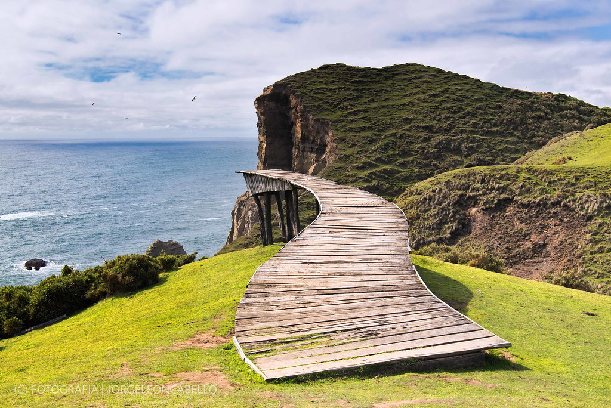
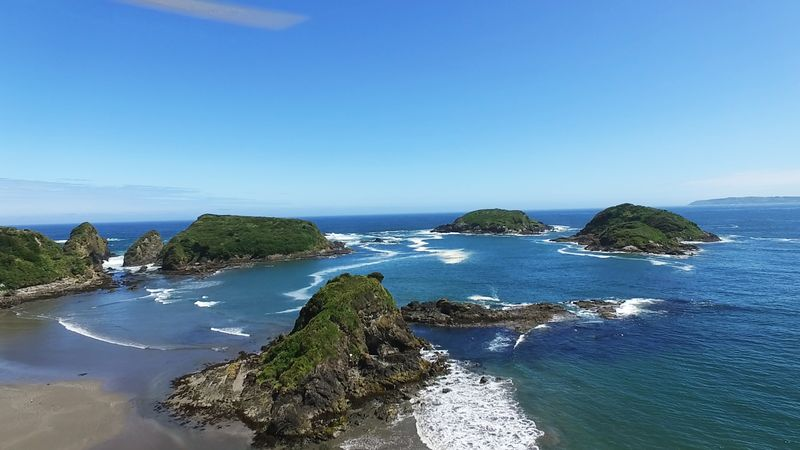
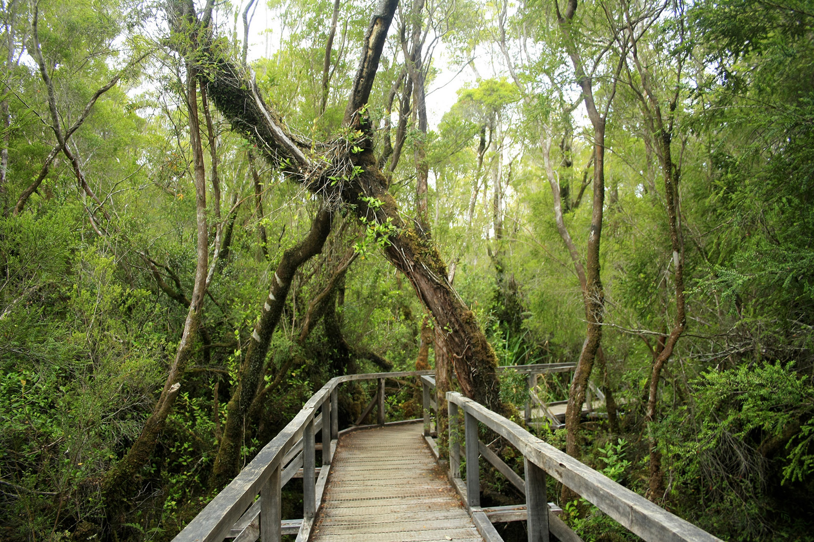

Nuestros Tours

Tour Muelle de la Luz
Disfruta del muelle de la luz tambien conocido como el de las almas y sus grandes vistas.
Más información

Puñihuil
Observa la impresionante colonia de pingüinos de Puñihuil y sus hermosas playas que habitan cerca de la isla Pingüinera.
Más información
Tour Parque Tepuhueico
Observa el impresionante del parque de Tepuhueico y su hermosa cascada natural de nuestro bosque de chiloe .
Más información

Tour Parque Nacional Chiloé
Observa los hermosos paisajes de nuestra isla un Tour en el parque nacional.
Más información